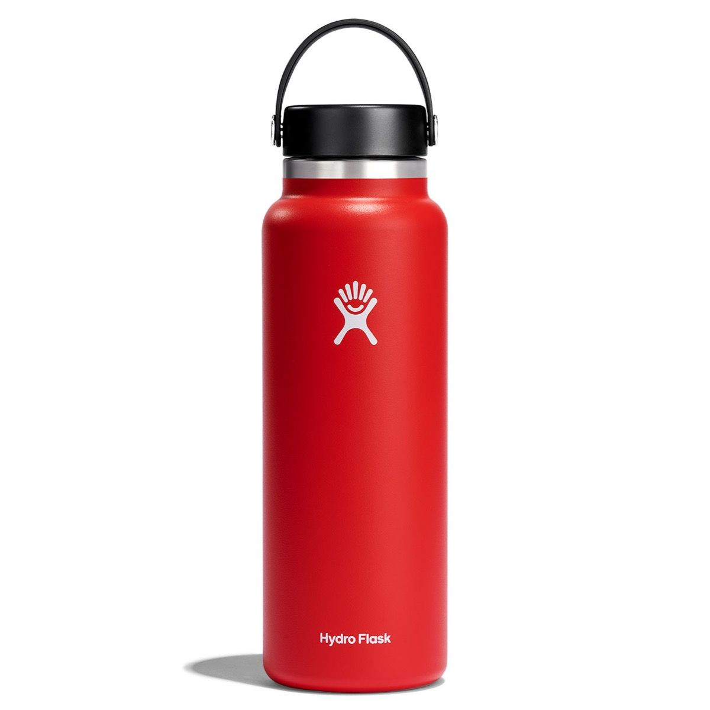
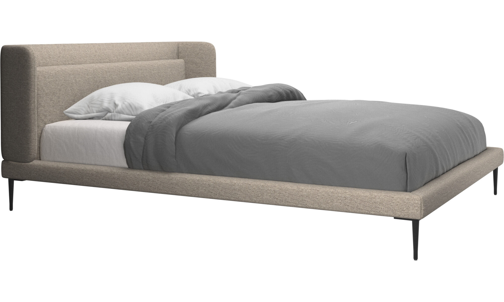

Google Lens 
VSMobile Net 

Output on Google Lens: Hydro flask open mouth
Output on Mobile Net: Red water bottle
Google lens more accurate

Output on Google Lens: Native Shoes
Output on Mobile Net: Native Shoes
Both Are accurate

Output on Google Lens: Apple Beats Solo3
Output on Mobile Net: Mike, Microphone
Google lens more accurate
Output on Google Lens: Rainbowcorn plush series 2
Output on Mobile Net: Ski Mask
Google lens more accurate
